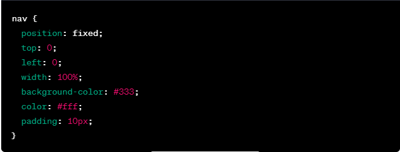
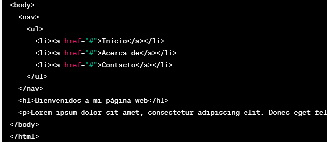
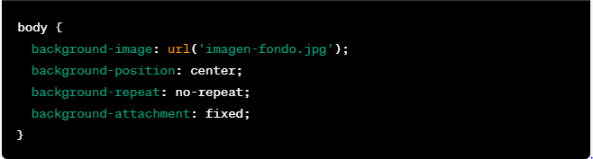
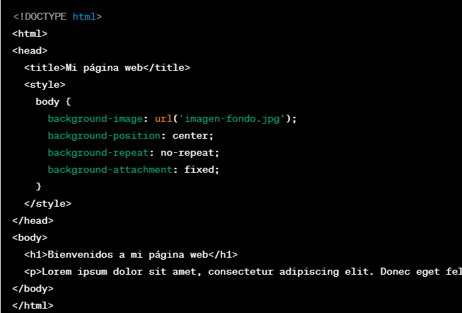
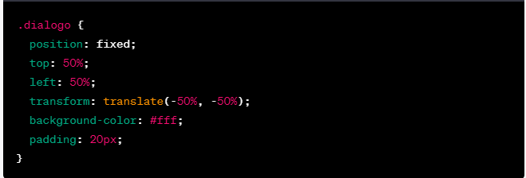
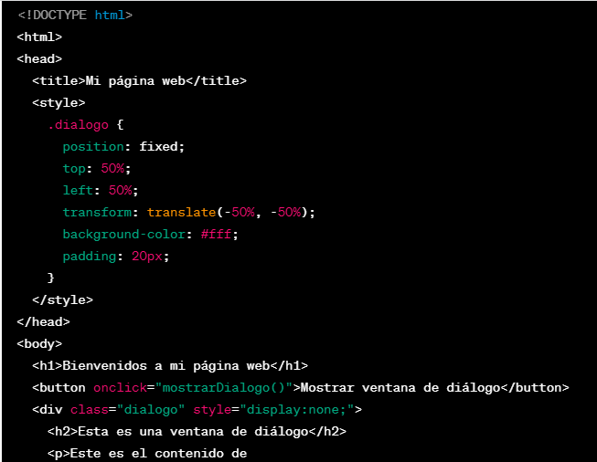

Barra de navegación fija en la parte superior de la página
 Este código CSS fija la barra de navegación en la parte superior de la página, independientemente de si el usuario desplaza la página hacia arriba o hacia abajo. La barra de navegación ocupará el 100% del ancho de la ventana del navegador y tendrá un color de fondo gris oscuro y un texto en color blanco.
Imagen de fondo fija
 Este código CSS fija la imagen de fondo en una posición determinada en la ventana del navegador, independientemente de si el usuario desplaza la página hacia arriba o hacia abajo. La imagen se posicionará en el centro de la ventana y no se repetirá. Además, la imagen de fondo se fijará en su posición, lo que significa que permanecerá en su lugar incluso cuando el usuario desplaza la página.
Ventana de diálogo fija:
 Este código CSS fija una ventana de diálogo en una posición determinada en la ventana del navegador, independientemente de si el usuario desplaza la página hacia arriba o hacia abajo. La ventana de diálogo estará centrada en la pantalla y tendrá un fondo blanco y un relleno de 20 píxeles. La propiedad "transform" se utiliza para centrar la ventana de diálogo en la pantalla.